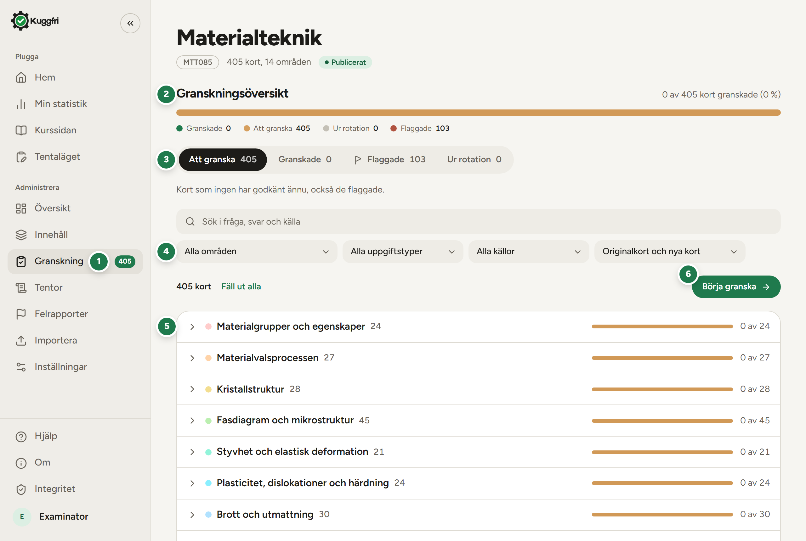

Samma tokens, typsnitt och komponenter som kuggfri.com, anpassade för A4. Den här PDF:en är byggd med systemet den beskriver, och allt i den kan återskapas med ett kommando. Ljust tema är standard; mörkt tema finns för skärm.
Typsnitt
Figtree
självhostat, vikt 300 till 900
Teman
2
ljust för utskrift, mörkt för skärm
Diagramtyper
12
med regler, ljust och mörkt
Kommando
1
npm run pdf
Innehåll
Grunder
Principer, språk och tal
2
Färger
3
Typografi, sidmall och rutnät
4
Komponenter
Nyckeltal, steg, block och knappar
5
Skärmbilder, listor och tabeller
6
Statistik
Så skildrar vi statistik
7
Diagram
Andelsstapel och framstegsstapel
8
Stapeldiagram
9
Linjediagram och ringdiagram
10
Radardiagram
11
Områdesstaplar och tabell med staplar
12
Aktivitetskarta och skattningar
13
Spridningsdiagram och diagrammet på sidan
14
Teman
Mörkt tema för PDF:er
15
Arbetssätt
Så återskapar du en PDF
16
Varför ett eget system för PDF:er
Infoblad, granskningsguider och mötesunderlag ska kännas som tjänsten själv. Webbens designsystem (kuggfri.com/designsystem) gäller skärmen; det här översätter det till papper: millimeter i stället för pixlar, vit sida i stället för duk, och diagram som fungerar utan hovring.
Var allt finns
Tema, komponenter och diagram: scripts/pdf/tema.cjs
Utskrift med kontroller: scripts/pdf/skriv-ut.cjs
Dokumenten: scripts/pdf/, resultatet i docs/
Webbens tokens: app/globals.css
Byggda med systemet
Designsystem.pdf
Det här dokumentet
granskningsguide-sv.pdf
Johan, områdena 1–11
review-guide-en.pdf
Roland, topics 12–14
Studentguide.pdf
Till studenterna vid lanseringen
Infoblad.pdf
Till kursansvariga
Kuggfri, designsystemet för PDF:er kuggfri.com Sida 1 av 16
Designsystem
PDF:er från Kuggfri, version 1, oktober 2026
Principer
Sex regler som avgör de flesta beslut. Är du osäker: välj det lugnare alternativet.
1
Lugnt och ljust
Vit sida, grå ytor och svart text. Färg används där den betyder något: accenten för huvudhandlingen, diagramfärgerna för data.
2
Färg som prick, inte block
Nyckeltal och rubriker får en liten färgprick. Inga färgade bakgrunder: de konkurrerar med innehållet och följer inte appen.
3
Samma språk som appen
Tokens, Figtree, piller och rundade block från kuggfri.com. En PDF ska kännas som tjänsten på papper.
4
Läsaren först
Skriv för den som läser: rubriker säger vad läsaren gör, ingen processtext. Engelska där läsaren inte läser svenska.
5
Riktiga bilder
Skärmbilder tas från testkopian, som rätt roll ser den, med numrerade markeringar och en förklaringslista bredvid.
6
Inget rinner över
Varje sida kontrolleras automatiskt vid bygget, och varje sida granskas som bild innan PDF:en skickas.
Språk och tal
Vad
Svenska
Engelska
Regel
Procent
37 %
37%
Heltal. Nämnaren i undertexten: "150 av 405".
Decimaler
3,5
3.5
En decimal räcker nästan alltid.
Tusental
1 250
1,250
Mellanslag på svenska.
Intervall
områdena 1–11
topics 12–14
Tankstreck, inte bindestreck.
Datum
1 okt 2026
1 Oct 2026
Veckodag bara när den behövs.
Tid
ca 5 h, kl. 10.00
about 2 h, 10:00
Ungefärligt anges som ungefärligt.
Skiljetecken
Komma eller tankstreck
Aldrig mittpunkten (U+00B7), någonstans, i någon PDF. Bygget stoppar om den finns.
Ton
Kort och sakligt, vänligt utan att vara käckt. Inga utropstecken.
Säg vad läsaren ska göra, i den ordning hen gör det. Knappar och flikar heter exakt som i appen, i fetstil.
Siffror i nyckeltal och tabeller avrundas och förklaras: vad räknas, och av hur många.
Kuggfri, designsystemet för PDF:er kuggfri.com Sida 2 av 16
Designsystem
PDF:er från Kuggfri, version 1, oktober 2026
Färger
Samma tokens som app/globals.css. Ytorna går i nivåer, från sidan till yta 3; mörkt tema skiljer dem åt med ljushet i stället för linjer.
Ljust temaStandard för PDF
Sidapage
Dukbg
Blocksurface
Yta 2surface-2
Yta 3surface-3
Linjeline
Textfg
Dämpadmuted
Accentaccent
Accent mjukaccent-soft
Accent textaccent-ink
Faradanger
Mörkt temaFör skärm
Sidapage
Dukbg
Blocksurface
Yta 2surface-2
Yta 3surface-3
Linjeline
Textfg
Dämpadmuted
Accentaccent
Accent mjukaccent-soft
Accent textaccent-ink
Faradanger
Diagramfärger, ljustI den här ordningen
Serie 1chart-1
Serie 2chart-2
Serie 3chart-3
Serie 4chart-4
Rutnätchart-grid
Diagramfärger, mörktI den här ordningen
Serie 1chart-1
Serie 2chart-2
Serie 3chart-3
Serie 4chart-4
Rutnätchart-grid
Skattningsskalan 1 till 5
Bara för skattningar. Dämpade toner från rött till grönt.
1
2
3
4
5
Områdesfärger
Varje område har en fast färg och ett nummer, samma i radar, lista och staplar. Efter tio börjar färgerna om.
12345678910
12345678910
Kuggfri, designsystemet för PDF:er kuggfri.com Sida 3 av 16
Designsystem
PDF:er från Kuggfri, version 1, oktober 2026
Typografi
Figtree, självhostad från @fontsource-variable/figtree. Siffror är tabulära överallt, så att kolumner och nyckeltal står i linje.
Stil
Mått
Prov
Rubrik 1
25 pt, 800, −2 %
Så granskar du korten
Nyckeltal
21 pt, 800
297
Rubrik 2
14,5 pt, 800
Ett kort i taget
Ingress
11,2 pt, dämpad
Kortet visas som studenten ser det.
Rubrik 3
10,6 pt, 750
Bra att veta
Brödtext
9,6 pt, 1,45
Varje beslut sparas direkt och tar dig till nästa kort.
Liten text
8,8 pt
Förklaringar, listor och tabeller.
Överrubrik
7,6 pt, 800, versaler
Granskningsguide för examinatorer
Sidmall
A4 stående, utan utskriftsmarginal: marginalerna ligger i sidan själv. Sidan har fast höjd; det som inte får plats flyttas eller kortas.
1Marginaler 13 mm upptill, 14 mm i sidorna och 10 mm nedtill.
2Sidhuvud: logotypen 11 mm hög till vänster; överrubrik i grönt och en metarad till höger.
3Innehållet i en kolumn med 4,2 mm mellan blocken.
4Sidfot nederst med en linje ovanför: liten logotyp, kontakt, kuggfri.com och sidnumret.
Rutnät
3,5 mm mellanrum. Bild och förklaring delas 1,15 till 1.
4 kolumner: Nyckeltal, steg
3 kolumner: Block
2 kolumner: Regler, jämförelser
Bild och förklaring
Kuggfri, designsystemet för PDF:er kuggfri.com Sida 4 av 16
Designsystem
PDF:er från Kuggfri, version 1, oktober 2026
Nyckeltal
Som StatTile på hemsidan: grå yta, färgprick och rubrik, stort värde och vad värdet betyder. Tre eller fyra i rad, överst, före diagrammen. Prickarnas ordning: grön, blå, orange, lila. I koden: tiles([[rubrik, värde, undertext, färg]]).
Inlärda kort
150
37 % av 405
Dagar i rad
18
2 frysningar kvar
Repetitioner i dag
0
28 kvar i dag
Snittskattning
3,5
av 5, senaste veckan
Inlärda kort
150
37 % av 405
Dagar i rad
18
2 frysningar kvar
Repetitioner i dag
0
28 kvar i dag
Snittskattning
3,5
av 5, senaste veckan
Steg
Numrerade i accentens grönt, med en rubrik som är en handling och två till fyra rader text.
1
Öppna länken
Öppna länken från Alvin i webbläsaren.
2
Skapa konto
Välj Skapa konto och bekräfta via mejlet.
3
Öppna Granskning
Välj Granskning i sidomenyn.
4
Börja
Välj område och tryck Börja granska.
Block
Tre sorter. Vitt block med kant för det man läser i lugn och ro, grå yta för det som kompletterar, och beslutsrutor för val.
Block
Vit yta, tunn kant och en mjuk skugga, 20 pt hörn. För tabeller, listor och skärmbilder.
Grå ruta
Yta 2 utan kant, 12 pt hörn. Rubriken får en färgprick. För tips och sammanfattningar.
✓ Godkänn G
Beslutsruta: knappen som den ser ut i appen, och vad den gör.
Knappar och tangenter
Allt är piller, som i appen. En grön huvudhandling; resten grå eller kantade. Kortkommandon i en liten ram.
✓ Godkänn GRedigera RÅtgärdadTa ur rotation TTangenter: JKEscCtrlZ
Kuggfri, designsystemet för PDF:er kuggfri.com Sida 5 av 16
Designsystem
PDF:er från Kuggfri, version 1, oktober 2026
Skärmbilder med markeringar
Skärmbilden i ett block med 12 pt hörn och kant. Gröna, numrerade markeringar på det som förklaras, och en numrerad förklaringslista under eller bredvid. Beskär till det som förklaras.

1Fetstil för det som står i appen.
2Förklaringen säger vad det är och vad man gör med det.
3Numren följer läsordningen, uppifrån och ner.
4Markeringen ligger i marginalen, inte över text.
Så tas skärmbilderna
Som den roll som ska läsa: en examinator ser inte adminens menyer. Skriptet loggar in med ett lokalt testkonto.
Ljust läge, 2x upplösning och 1280 punkter brett fönster; mörkt läge bara till mörka PDF:er.
Hela kort tas i ett högt fönster med hopfälld sidomeny, och klipps ut ur fönstret, inte ur hela sidan: helsidesläget ändrar höjden och flyttar fasta knapprader.
Markeringarna läggs in i sidan före bilden, 28 punkter stora, i marginalen eller bredvid det de pekar på.
Inga riktiga studentuppgifter i bild; testkopians demodata räcker.
Punktlista
Grön prick, 9 pt text.
En mening per punkt, högst fem punkter.
Röd prick för det man inte ska göra.
Åtgärdslista
✓ Godkänn och ta bort flaggan GKnappen överst, förklaringen under.
ÅtgärdadEn linje mellan raderna.
Tabell
Område
Kort
Flaggade
Granskare
1–11, metallerna
297
87
Johan
12–14, polymererna
108
16
Roland
Rubriker i små versaler, linjer mellan raderna, ingen ram runt. Första kolumnen i fetstil.
Gör
Knappar heter exakt som i appen, med samma kortkommando.
En primär knapp per ruta.
Gör inte
Egna färger på knappar eller block.
Ikoner som inte finns i appen.
Kuggfri, designsystemet för PDF:er kuggfri.com Sida 6 av 16
Designsystem
PDF:er från Kuggfri, version 1, oktober 2026
Så skildrar vi statistik
Statistiken ska gå att läsa på några sekunder: först nyckeltalen, sedan ett diagram som svarar på en fråga. Som på hemsidan och under Min statistik.
Gör
Börja med tre eller fyra nyckeltal: rubrik, värde och vad det betyder.
En serie, en färg. Huvudserien (inlärt, granskat) är alltid grön, sedan blå, orange och lila.
Andelar som "37 %", med nämnaren intill: "150 av 405".
Skriv ut värdet där läsaren behöver det: slutvärdet på linjen, värdet ovanför få staplar.
Svaga rutnätslinjer, y-axeln från noll och högst fyra skalsteg.
Områden har fast nummer och färg i alla diagram.
Märk exempeldata som exempel; riktiga siffror får källa och datum.
Gör inte
Färgade bakgrunder för nyckeltal.
Tårtdiagram med flera kategorier, 3D eller dubbla y-axlar.
Fler än fyra serier i samma diagram.
Förklaring långt från diagrammet; den står direkt intill eller i diagrammet.
Rött och grönt för bra och dåligt, utanför skattningsskalan.
Decimaler som inte betyder något: 37,4 % blir 37 %.
Välj rätt diagram
Frågan
Diagram
Exempel
Hur mycket, just nu?
Nyckeltal s. 5
Inlärda kort, dagar i rad
Hur stor andel, och av vad?
Andelsstapel s. 8
Granskade, att granska, ur rotation
Hur långt har vi kommit?
Framstegsstapel s. 8
368 av 405 kort sedda
Hur mycket per dag eller vecka?
Stapeldiagram s. 9
Repetitioner per dag
Hur har det utvecklats?
Linjediagram s. 10
Inlärda och sedda kort över tid
En enda andel, stort?
Ringdiagram s. 10
37 % inlärt
Var är luckorna, per område?
Radardiagram s. 11
Kunskap per område (högst 14)
Exakt hur långt i varje område?
Områdesstaplar s. 12
Inlärt och delvis inlärt per område
Flera mått per rad?
Tabell med staplar s. 12
Granskningen per område
Hur jämn är vanan?
Aktivitetskarta s. 13
Repetitioner per dag, tolv veckor
Hur fördelar sig svaren?
Skattningsfördelning s. 13
Skattningar 1 till 5
Hänger två mått ihop?
Spridningsdiagram s. 14
Andel inlärda mot snittskattning
Kuggfri, designsystemet för PDF:er kuggfri.com Sida 7 av 16
Designsystem
PDF:er från Kuggfri, version 1, oktober 2026
Andelsstapel
När en helhet delas i två till fyra delar som tillsammans är 100 %, till exempel granskningens läge (som ReviewBar i appen).
Ljust temaExempeldata
Granskade 120Att granska 270Ur rotation 15
120 av 405 kort granskade (30 %)
Mörkt temaExempeldata
Granskade 120Att granska 270Ur rotation 15
120 av 405 kort granskade (30 %)
Regler
Delarna i en logisk ordning: klart, kvar, borttaget.
Förklaringen under stapeln med prick, namn och antal.
Summan och andelen i klartext under, så att ingen behöver räkna.
I koden
shareBar([{ label, value, tone }]) i scripts/pdf/tema.cjs.
Framstegsstapel
Hur långt något har kommit mot ett mål, med en enda färg: sedda kort, granskade kort, dagar kvar till tentan. Som stapeln bredvid "Inlärd kunskap" på hemsidan.
Ljust temaExempeldata
88 %
Inlärd kunskap
368 av 405 kort sedda
Mörkt temaExempeldata
88 %
Inlärd kunskap
368 av 405 kort sedda
Regler
Ett grönt spår på yta 3, rund ände.
Talet i klartext under: "368 av 405 kort sedda".
Flera delar i samma stapel? Använd andelsstapeln.
I koden
progressBar(värde, total, { label }) i scripts/pdf/tema.cjs.
Så sitter delarna ihop
Som kursblocket på hemsidan, och så vi helst sammanfattar statistik: stor siffra, framsteg, nyckeltal.
M
Materialteknik
MTT085, 405 kort
88 %
Inlärd kunskap
368 av 405 kort sedda
Inlärda
150
37 %
I rad
18
dagar
I dag
0
28 kvar
Snitt
3,5
av 5
M
Materialteknik
MTT085, 405 kort
88 %
Inlärd kunskap
368 av 405 kort sedda
Inlärda
150
37 %
I rad
18
dagar
I dag
0
28 kvar
Snitt
3,5
av 5
Kuggfri, designsystemet för PDF:er kuggfri.com Sida 8 av 16
Designsystem
PDF:er från Kuggfri, version 1, oktober 2026
Stapeldiagram
Mängd per tidsenhet: repetitioner per dag, nya kort per vecka. Som BarChart under Min statistik.
Den senaste stapeln får gärna accentens mörkare ton.
I koden
barChart({ labels, values, labelEvery, highlight }) i scripts/pdf/tema.cjs.
Staplade staplar
När varje stapel består av två delar som båda betyder något, till exempel nya kort och repetitioner samma dag.
Ljust temaExempeldata
Nya kortRepetitioner
Mörkt temaExempeldata
Nya kortRepetitioner
Regler
Högst tre lager; det viktigaste lagret nederst.
Förklaringen direkt under diagrammet.
Bara toppen på stapeln är rundad.
I koden
barChart({ values: [[a, b]], tones }) i scripts/pdf/tema.cjs.
Kuggfri, designsystemet för PDF:er kuggfri.com Sida 9 av 16
Designsystem
PDF:er från Kuggfri, version 1, oktober 2026
Linjediagram
Utveckling över tid: hur kunskapen växer, hur många kort som är sedda. Som "Så växer din kunskap" under Min statistik. Linje när värdet bygger vidare på det förra; staplar när varje period står för sig.
En enda andel som ska synas stort, till exempel på ett omslag. Aldrig för flera kategorier: då är andelsstapeln bättre.
Ljust temaExempeldata
150 av 405 kort inlärda efter 18 dagar
Mörkt temaExempeldata
150 av 405 kort inlärda efter 18 dagar
Regler
En båge i accentens färg på ett spår i yta 3, rund ände.
Procenten i mitten, nämnaren bredvid i klartext.
Ringen börjar klockan tolv och går medsols.
I koden
donut(värde, total, { label }) i scripts/pdf/tema.cjs.
Kuggfri, designsystemet för PDF:er kuggfri.com Sida 10 av 16
Designsystem
PDF:er från Kuggfri, version 1, oktober 2026
Radardiagram
Kunskap per område, med alla områden samtidigt: var luckorna finns. Hemsidans huvudperson. Fem till fjorton områden.
Ljust temaExempeldata
1Materialgrupper och egenskaper46 %
2Materialvalsprocessen26 %
3Kristallstruktur29 %
4Fasdiagram och mikrostruktur42 %
5Styvhet och elastisk deformation43 %
6Plasticitet, dislokationer och härdning25 %
7Brott och utmattning30 %
8Termiska egenskaper, diffusion och krypning28 %
9Stål, värmebehandling och bearbetning36 %
10Icke-järnmetaller29 %
11Hållbarhet och återvinning44 %
12Polymerers struktur41 %
13Polymerers reologi och bearbetning45 %
14Polymerers mekaniska egenskaper48 %
Mörkt temaExempeldata
1Materialgrupper och egenskaper46 %
2Materialvalsprocessen26 %
3Kristallstruktur29 %
4Fasdiagram och mikrostruktur42 %
5Styvhet och elastisk deformation43 %
6Plasticitet, dislokationer och härdning25 %
7Brott och utmattning30 %
8Termiska egenskaper, diffusion och krypning28 %
9Stål, värmebehandling och bearbetning36 %
10Icke-järnmetaller29 %
11Hållbarhet och återvinning44 %
12Polymerers struktur41 %
13Polymerers reologi och bearbetning45 %
14Polymerers mekaniska egenskaper48 %
Regler
Inlärda kort som fylld yta (60 %), delvis inlärda som ljus yta (7 %) utanför.
Rutnät i fyra ringar: 25, 50, 75 och 100 %.
Varje område har sitt nummer i områdets färg; namnen i listan bredvid eller under.
Listan läses kolumnvis: första halvan till vänster, resten till höger.
I koden
radarChart(områden) och radarList(områden) i scripts/pdf/tema.cjs.
Placering
På en hel sida: radarn till vänster och listan till höger, som på hemsidan. I en halv kolumn: radarn överst och listan under i två kolumner, som här. Områdesnamnen kortas med tre punkter hellre än att radbrytas.
Kuggfri, designsystemet för PDF:er kuggfri.com Sida 11 av 16
Designsystem
PDF:er från Kuggfri, version 1, oktober 2026
Områdesstaplar
Samma data som radarn när exakta värden behövs, eller när det finns fler än fjorton områden. Som listan bredvid radarn på hemsidan.
Ljust temaExempeldata
1Materialgrupper och egenskaper46 %
2Materialvalsprocessen26 %
3Kristallstruktur29 %
4Fasdiagram och mikrostruktur42 %
5Styvhet och elastisk deformation43 %
Mörkt temaExempeldata
1Materialgrupper och egenskaper46 %
2Materialvalsprocessen26 %
3Kristallstruktur29 %
4Fasdiagram och mikrostruktur42 %
5Styvhet och elastisk deformation43 %
Regler
Nummer i områdets färg, namn, andel inlärda till höger och stapeln under.
Inlärt fyllt, delvis inlärt i samma färg med 30 % täckning.
Områdena i kursens ordning, så att numren stämmer med radarn.
I koden
areaBars(områden) i scripts/pdf/tema.cjs.
Tabell med staplar
Flera mått per rad, när läsaren vill jämföra raderna: granskningen per område, framsteg per student. Som områdesraderna under Granskning.
Ljust temaExempeldata
Område
Kort
Granskade
Kristallstruktur
28
22 av 28
Fasdiagram
45
32 av 45
Brott och utmattning
30
9 av 30
Polymerers struktur
37
37 av 37
Mörkt temaExempeldata
Område
Kort
Granskade
Kristallstruktur
28
22 av 28
Fasdiagram
45
32 av 45
Brott och utmattning
30
9 av 30
Polymerers struktur
37
37 av 37
Regler
Namnet med områdets prick, antalet, en smal andelsstapel och "x av y" längst till höger.
Stapeln utan förklaring i varje rad; förklaringen en gång, ovanför eller under tabellen.
Raderna i samma ordning som överallt annars.
I koden
barTable(rader, { segments }) i scripts/pdf/tema.cjs.
Kuggfri, designsystemet för PDF:er kuggfri.com Sida 12 av 16
Designsystem
PDF:er från Kuggfri, version 1, oktober 2026
Aktivitetskarta
Hur jämn vanan är, dag för dag: en ruta per dag, måndag överst. Som aktivitetskartan under Min statistik.
Ljust temaExempeldata
MindreMer
Mörkt temaExempeldata
MindreMer
Regler
Fem nivåer: tom ruta i yta 3, sedan grönt med 25, 50, 75 och 100 % täckning.
Nivåerna räknas från periodens högsta dag; förklaringen Mindre till Mer under.
Månader överst, mån, ons och fre till vänster.
I koden
heatmap(antalPerDatum, { weeks }) i scripts/pdf/tema.cjs.
Skattningsfördelning
Hur studenterna skattar sig, 1 till 5, för ett kort, ett område eller en vecka.
Ljust temaExempeldata
Mörkt temaExempeldata
Regler
Skattningsskalans färger och inga andra.
Antalet ovanför varje stapel; staplarna i ordning 1 till 5.
Använd inte skalan för annat än skattningar.
I koden
ratingChart([antal1, …, antal5]) i scripts/pdf/tema.cjs.
Kuggfri, designsystemet för PDF:er kuggfri.com Sida 13 av 16
Designsystem
PDF:er från Kuggfri, version 1, oktober 2026
Spridningsdiagram
När två mått per kort eller student ska jämföras, till exempel för att hitta kluriga kort: få kan dem, och skattningen är låg.
Ljust temaExempeldata
KortKluriga kort
Mörkt temaExempeldata
KortKluriga kort
Regler
Punkterna i blått med 55 % täckning, så att täta områden syns.
Det som ska hittas i orange, ovanpå, med en tunn ring.
Båda axlarna namngivna under och till vänster.
I koden
scatter(punkter, { xLabel, yLabel }) i scripts/pdf/tema.cjs.
Diagrammet på sidan
Varje diagram står i ett eget block: en rubrik som säger vad det visar, en rad om period och urval, diagrammet med förklaring, och källan längst ner.
1Rubrik 10,6 pt: vad diagrammet visar, utan "Diagram över".
2Underrad 8 pt, dämpad: period, urval och enhet.
3Diagrammet i full blockbredd, förklaringen direkt under.
4Källa 7,2 pt längst ner: var siffrorna kommer ifrån och när de hämtades.
Läsbarhet
Text i diagram minst 7 pt när diagrammet står i sidan; skala inte ner ett diagram så att etiketterna blir mindre.
Diagramfärgerna är kategoriska och kontrollerade mot både ljus och mörk yta (app/globals.css); byt inte ut dem mot egna.
Färgen får aldrig vara det enda som bär informationen: förklaring, etikett eller värde står också i text.
Kontrollera en utskrift i gråskala om PDF:en ska skrivas ut: serierna ska fortfarande gå att skilja åt.
Kuggfri, designsystemet för PDF:er kuggfri.com Sida 14 av 16
Designsystem
PDF:er från Kuggfri, version 1, oktober 2026
Mörkt tema för PDF:er
Ljust tema är standard: det skrivs ut bra och läses bäst på papper. Mörkt tema är för PDF:er som bara visas på skärm, till exempel på en projektor i ett mörkt rum.
Veckorapport
Materialteknik MTT085
Så gick veckan
Inlärda kort
150
37 % av 405
Dagar i rad
18
2 frysningar kvar
Repetitioner per dag
Kunskap per område
1Materialgrupper och egenskaper46 %
2Materialvalsprocessen26 %
3Kristallstruktur29 %
4Fasdiagram och mikrostruktur42 %
5Styvhet och elastisk deformation43 %
6Plasticitet, dislokationer och härdning25 %
7Brott och utmattning30 %
8Termiska egenskaper, diffusion och krypning28 %
9Stål, värmebehandling och bearbetning36 %
10Icke-järnmetaller29 %
11Hållbarhet och återvinning44 %
12Polymerers struktur41 %
13Polymerers reologi och bearbetning45 %
14Polymerers mekaniska egenskaper48 %
Så slår du på det
Hela dokumentet: documentHtml({ dark: true }) sätter klassen dark på sidan.
Sidhuvud och sidfot: { dark: true } ger logotyperna för mörkt tema.
En del av en ljus sida: lägg innehållet i ett element med klassen dark, som proven i den här PDF:en.
Vad som ändras
Sidan blir duken (#101111) och ytorna ljusare nivåer av grått.
Accenten och diagramfärgerna blir ljusare, så att de syns mot mörkt.
Block tappar kanten; ljusheten skiljer dem åt.
Skärmbilder tas i mörkt läge i appen, inte i ljust.
Logotyperna
Var
Ljust
Mörkt
Sidhuvud
logo-light.png
logo-dark.png
Sidfot
logo-menu-light.png
logo-menu-dark.png
Filerna ligger i public/.
Kontrollera
Läs sidan på den skärm den ska visas på.
Skriv inte ut mörka PDF:er; gör en ljus version.
Kuggfri, designsystemet för PDF:er kuggfri.com Sida 15 av 16
Designsystem
PDF:er från Kuggfri, version 1, oktober 2026
Så återskapar du en PDF
Allt finns i repot. Ett kommando bygger HTML, PDF och sidbilder, och stoppar om något är fel.
1
Starta testkopian
Bara om PDF:en har skärmbilder: bygg och starta 3001 (se nedan).
2
Ta skärmbilderna
Kör dokumentets skärmbildsskript; bilderna hamnar i docs/.
3
Bygg
npm run pdf bygger alla. Ett dokument: lägg till namnet.
4
Granska
Titta på varje sidbild (sökvägen skrivs ut). Rätta och bygg igen.
Filerna
scripts/pdf/tema.cjs
Tokens, CSS, komponenter och diagram.
scripts/pdf/skriv-ut.cjs
PDF med Chromium, kontroller och sidbilder.
scripts/pdf/bygg.cjs
Kommandot npm run pdf -- [namn].
scripts/pdf/designsystem.cjs
Den här PDF:en.
scripts/pdf/granskningsguide.cjs
Granskningsguiderna, svenska och engelska.
scripts/pdf/skarmbilder-granskning.cjs
Guidernas skärmbilder, mot 3001.
docs/<namn>.pdf
Resultatet; HTML-källan i en mapp bredvid.
Bygget stoppar om
en sida rinner över,
Figtree inte laddas,
en bild saknas,
mittpunkten (U+00B7) finns någonstans.
Testkopian på 3001
Bygg med NEXT_DIST_DIR=.next-prod npx next build, återställ sedan tsconfig.json och starta förhandsvisningen kuggfri-3001. Skärmbilderna tas mot den lokala databasen, aldrig mot produktionen.
En ny PDF
1Kopiera scripts/pdf/granskningsguide.cjs till en ny fil och byt mapp och namn.
2Skriv sidorna som funktioner som får sidnumret: sidhuvud, innehåll av komponenterna här, sidfot.
3Lägg till dokumentet i DOKUMENT i scripts/pdf/bygg.cjs.
4Bygg, granska varje sidbild och be om en andra genomläsning innan PDF:en skickas.
Innan PDF:en skickas
Varje sidbild granskad: inget beskuret, krockande eller tomt.
Siffrorna kontrollerade mot källan, med datum.
Knappar, flikar och namn exakt som i appen.
Rätt språk för läsaren, och samma ton som i appen.
När något ändras i appen
Nya tokens i app/globals.css förs över till LIGHT och DARK i tema.cjs.
Ändrade vyer: ta om skärmbilderna och bygg om alla PDF:er, även den här.
Kuggfri, designsystemet för PDF:er kuggfri.com Sida 16 av 16